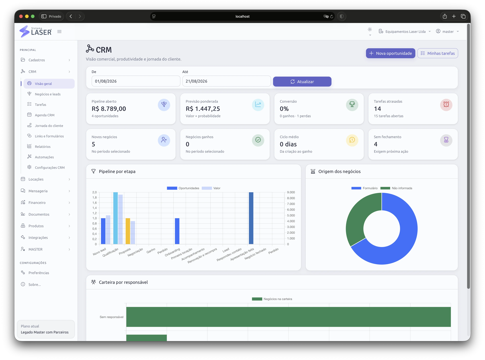
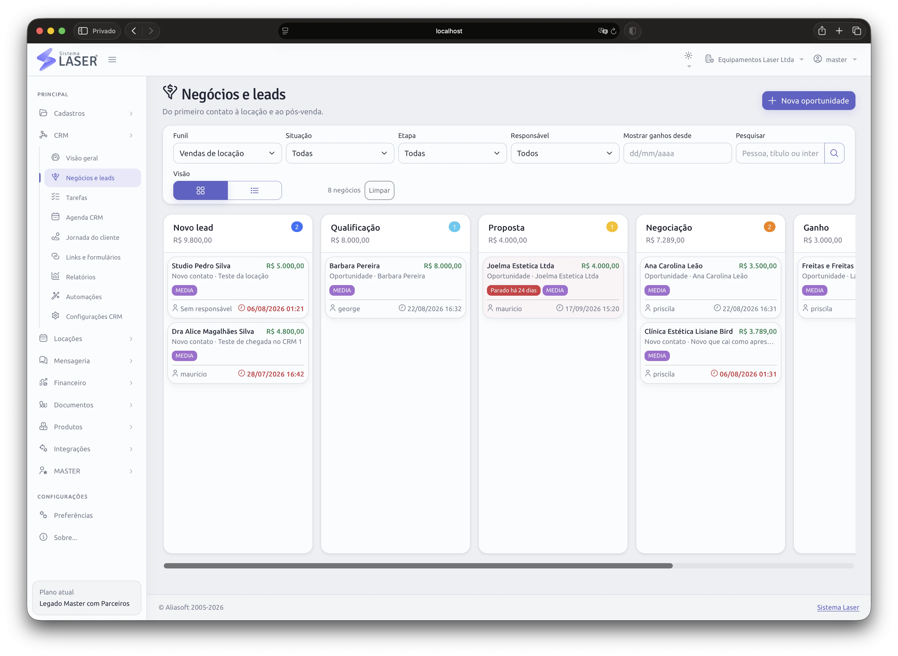
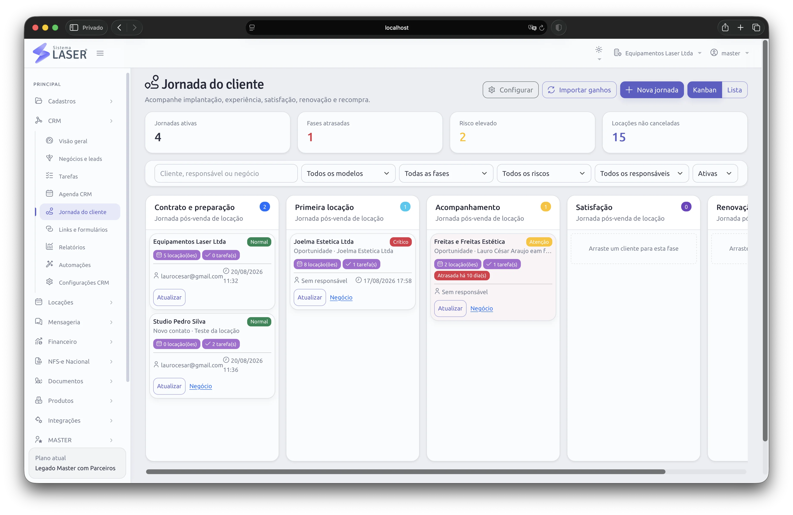
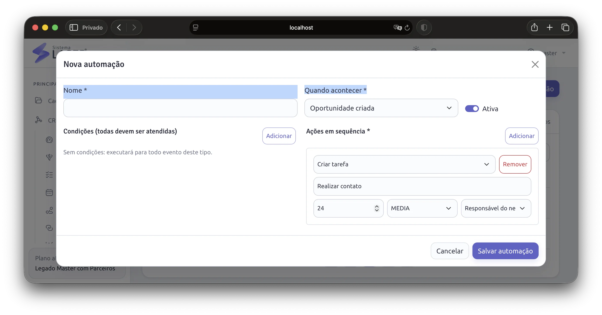
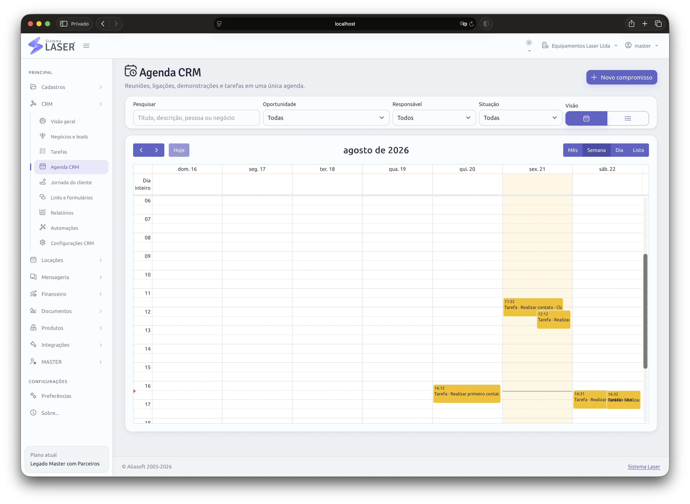
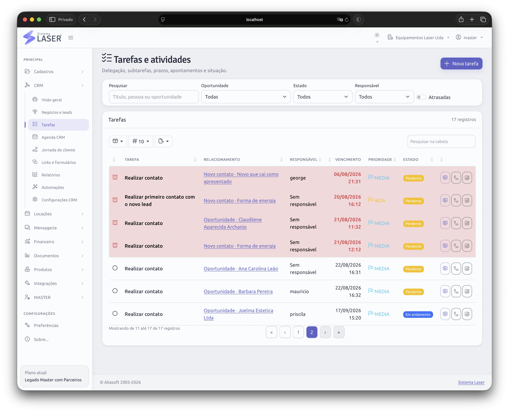
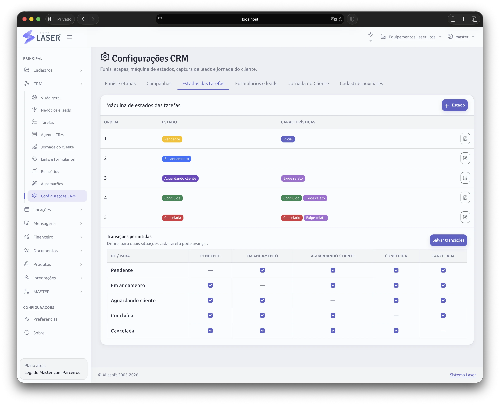

Capturar
Receba leads por formulários configuráveis e compartilháveis.
Capture leads, acompanhe negócios, cuide da jornada dos clientes atuais e organize a rotina comercial sem separar oportunidades, equipe e operação em ferramentas diferentes.
O dashboard resume leads, negócios, tarefas, etapas e indicadores para oferecer uma leitura clara da operação comercial.
Em vez de reconstruir o cenário em mensagens e planilhas, a gestão identifica prioridades, acompanha o ritmo da equipe e encontra oportunidades que precisam de atenção.

O CRM conecta a captação de novos clientes ao cuidado com quem já faz parte da sua base.
Receba leads por formulários configuráveis e compartilháveis.
Registre necessidades, origem e contexto de cada oportunidade.
Acompanhe cada negócio pelas etapas do seu processo.
Transforme próximos passos em tarefas claras para a equipe.
Reúna novos pedidos e oportunidades dos clientes atuais.
Use dashboards e relatórios para aprimorar a operação.
Organize a captação de novos clientes em um funil visual, com responsáveis, etapas e próximos passos que toda a equipe consegue acompanhar.
Formulários configuráveis podem ser compartilhados em campanhas, páginas e canais de atendimento. As respostas alimentam o processo comercial e reduzem cadastro repetido, mantendo o lead dentro da mesma plataforma que sustentará a operação.

Centralize oportunidades e demandas de clientes atuais em uma jornada que preserva histórico, contexto e continuidade.
A equipe entende o que já aconteceu, o que está em andamento e qual é a próxima oportunidade. Isso favorece um atendimento mais atento, ajuda a identificar recorrência e aproxima o trabalho comercial da operação real da locadora.

Programe automações para movimentar etapas, criar ações e apoiar rotinas recorrentes de acordo com o fluxo da sua empresa.
A automação reduz a dependência de memória e ajuda a manter o padrão mesmo quando o volume aumenta. A equipe continua responsável pelo relacionamento; o sistema cuida das repetições que consomem tempo.

Transforme acompanhamentos em tarefas com responsáveis e prazos. Visões de agenda ajudam a equilibrar compromissos, retornos e atividades da equipe.
A lista mantém as prioridades visíveis; o calendário semanal oferece uma leitura rápida da distribuição do trabalho. Assim, reuniões, ligações e próximos passos deixam de depender de lembretes isolados.


Configure estruturas e regras para aproximar o módulo da forma como sua empresa capta, negocia e se relaciona.
À medida que a operação amadurece, o CRM pode ser ajustado e estendido. O objetivo é dar consistência ao processo sem engessar a equipe em um modelo genérico.

Entenda como captação, relacionamento e rotina da equipe passam a compartilhar a mesma base.
Ver o plano ProNa demonstração, aplicamos negócios, jornada, tarefas e automações ao processo comercial da sua empresa.